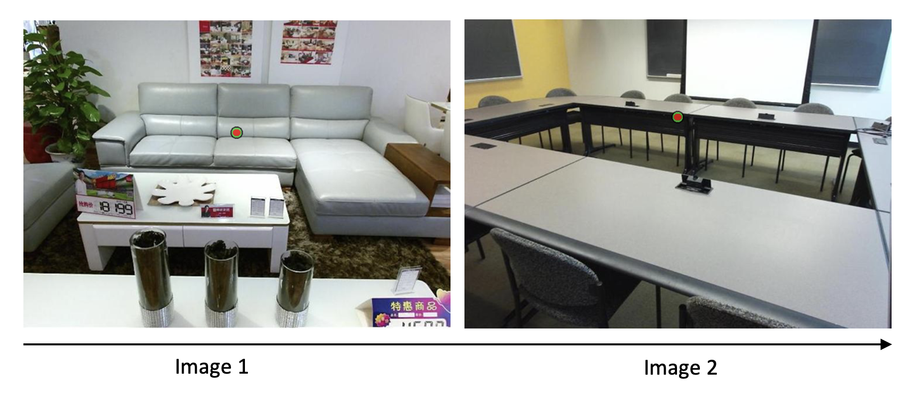
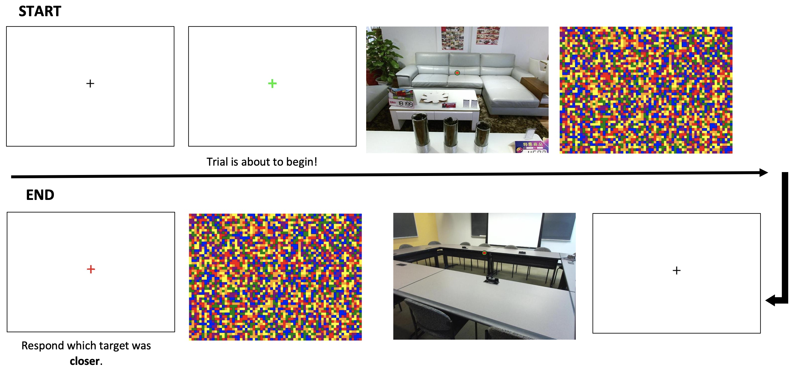

Please click 'AGREE' if you have read the consent form and agree to participate. If you do not consent to participate, close this window.
Thank you for your interest in this Human Intelligence Task (HIT). Before getting started, you will need to verify that you are an Amazon Mechanical Turk (MTurk) Worker. Please note that you will only get compensated for your participation if you provide a valid MTurk Worker ID.
Please enter your MTurk Worker ID in the textbox below.
You can find your Worker ID on the TOP LEFT of the screen on your MTurk Dashboard. It should look something like this:
Enter your unique Worker ID here:
Be sure to double check the spacing, spelling, and capitalization of your Worker ID before clicking the NEXT button to proceed.
Instructions
In the following experiment, you will be asked to make judgements on pictures of everyday scenes.
For each trial, you will see two images of scenes with a red, black, and green circle (the target) displayed over an object in the scene one after another.
Your task is to respond which image's target was closer to you - Image 1 or Image 2? Press the "z" key on your keyboard to indicate Image 1 or press the "m" key on your keyboard to indicate Image 2.
On some trials Image 1 and Image 2 will be the same. Press the spacebar to indicate that you saw the same image twice.
We ask that you pay close attention on each trial so you detect all of the targets, but occasionally you may accidentally miss one. If you do, please press the '0' key. You will not be penalized for missing a target, we'd just like to know so we can factor this into our analysis later.
Please respond as quickly and accurately as possible!
Note that the target will always appear in the center of your screen.

Instructions:
A fixation cross will appear in the center of the screen - focus on this cross. When the cross turns green, the trial is about to begin. The image will then appear for a brief amount of time, so make sure you are watching closely as to not miss the target. Then, the scene and target will disappear, and you will see an image of colored squares. Once this image disappears you will briefly see a fixation cross followed by another image of a scene for a brief amount of time. This will again be followed by an image of colored squares.
Then you will see a red fixation cross, indicating that you need to give your response. Respond which image's target was closer to you - Image 1 or Image 2? Press the 'z' key on your keyboard to indicate Image 1 or press the 'm' key on your keyboard to indicate Image 2. As soon as you respond, the fixation cross will turn black and the next trial will begin. The figure below depicts how a trial will run.
On some trials Image 1 and Image 2 will be the same. Press the spacebar to indicate that you saw the same image twice.Please respond as quickly and accurately as possible!
You will complete 86 trials total.
The experiment will begin with 9 practice trials. During the practice portion you will receive feedback on each trial. The next trial will start momentarily after you see the feedback. If you are ready to begin, please click 'START PRACTICE' below.

Part 2 Instructions:
You have completed the first part of the experiment!
In the last section of this experiment you will be rating 196 scenes based on two scene properties: mean depth and navigability.
Mean depth corresponds to the scale or size of the space in the image, such as a close-up view or a panoramic scene. Examples of images ordered from low to high mean depth (left to right) are included below.
You will also be asked to rate each image based on how easy it would be to navigate through the scene. Or in other words, how easy is it to move throughout the scene? Take into consideration obstacles, clutter, and restrictions to free movement in any direction. Examples of images ordered from low to high navigability (left to right) are included below
Please make sure you have read the definitions above carefully before selecting 'BEGIN' below!
Reminder: Your task is to respond which image's target was closer to you - Image 1 or Image 2? Press the "z" key on your keyboard to indicate Image 1 or press the "m" key on your keyboard to indicate Image 2.
If Image 1 and Image 2 were the same, press the spacebar to indicate that you saw the same image twice.
We ask that you pay close attention on each trial so you detect all of the targets, but occasionally you may accidentally miss one. If you do, please press the '0' key.
Click 'START' to continue to the experiment.
Please rate the ‘mean depth’ of this scene - 1 being the lowest mean depth and 5 being highest mean depth.
Mean depth corresponds to the scale or size of the space in the image, such as a close-up view or a panoramic scene.
Please rate the ‘navigability’ of this scene - 1 being the lowest navigability and 5 being highest navigability.
How ‘navigable’ is the scene? Or in other words, how easy is it to move throughout the scene? Take into consideration obstacles, clutter, and restrictions to free movement in any direction.
Please rate the ‘navigability’ of this scene - 1 being the lowest navigability and 5 being highest navigability.
How ‘navigable’ is the scene? Or in other words, how easy is it to move throughout the scene? Take into consideration obstacles, clutter, and restrictions to free movement in any direction.
Please rate the ‘mean depth’ of this scene - 1 being the lowest mean depth and 5 being highest mean depth.
Mean depth corresponds to the scale or size of the space in the image, such as a close-up view or a panoramic scene.
What term best expresses how you describe your gender identity?
Note: we are asking about gender in order to understand how your responses may differ based on different demographic characteristics. Specifically in this case, we are referring to your gender identity.